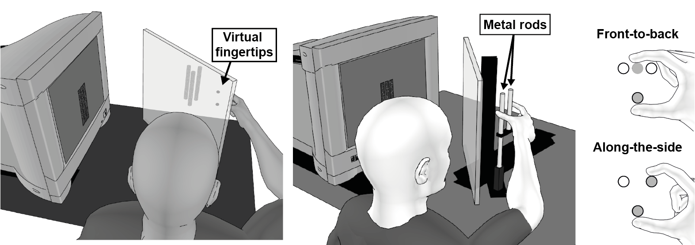

a cool gif

a neat figure

another neat figure
Human survival capabilities depend on a fundamental skill of the visual system: the interpretation of retinal images in order to extract knowledge about the 3D structure of the surrounding environment. We implement both virtual and real-world visual models in the study of cue combination and depth perception in an effort to examine how people process their surroundings as three-dimensional.
We welcome any and all interest in our work, and are always looking for participants for a variety of experiments covering a range of commitment levels. If you are interested, please participate.
03 mar 2018
The website is mobile-responsive!
03 mar 2018
The website is mobile-responsive!
03 mar 2018
The website is mobile-responsive!